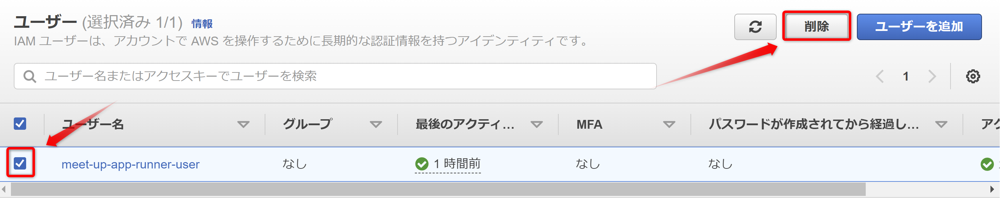

ゴミ掃除
1. App Runnerサービス削除
次のリンクよりApp Runnerサービス一覧を表示します。
App Runnerサービス一覧
画面に表示されている指示通り、入力欄にdeleteを入力し、削除ボタンをクリックします。
本日作成したサービスが削除されていることを確認します。

2. IAM削除
2.1. IAMユーザー削除
次のリンクよりIAMユーザー一覧を表示します。
IAMユーザー
今回作成したユーザーを選択し、削除ボタンをクリックします。

画面に表示されている指示通り、入力欄にmeet-up-app-runner-userを入力し、削除ボタンをクリックします。
対象のユーザーが削除されていることを確認します。
2.2. IAMポリシー削除
次のリンクよりIAMポリシー一覧を表示します。
IAMポリシー
作成したIAMポリシーを選択し、アクションボタンのドロップダウンより削除ボタンをクリックします。
画面に表示されている指示通り、入力欄にAccessEcrForAppRunnerを入力し、削除ボタンをクリックします。
検索欄にAccessEcrForAppRunnerを入力し、対象のポリシーが削除されていることを確認します。
2.3. IAMロール削除
次のリンクよりIAMロール一覧を表示します。
IAMロール
作成したIAMロールを選択し、削除ボタンをクリックします。
画面に表示されている指示通り、入力欄にAppRunnerECRAccessRoleを入力し、削除ボタンをクリックします。
3. ローカルに構築したDockerイメージ削除
3.1. コンテナの停止
次のコマンドを実行し、コンテナ状態を確認します。
docker ps
---
CONTAINER ID IMAGE COMMAND CREATED STATUS PORTS NAMES
e572bd192f8d app-runner-example "docker-entrypoint.s…" 00 seconds ago Up 00 seconds 0.0.0.0:3333->3333/tcp, :::3333->3333/tcp nice_kare
上記で実行したCONTAINER IDを次のコマンドで利用します。
起動中のコンテナを停止します。
docker stop [CONTAINER ID]
3.2. イメージの削除
次のコマンドを実行し、作成したコンテナイメージを確認します
docker images
まずは、ビルドで作成したコンテナイメージを削除します。（イメージ名がapp-runner-exampleのイメージ）
注意：[IMAGE ID]には、上記で実行した際に表示された、表示結果の左から３番目のランダムな文字列がIMAGE IDです。
docker rmi -f [IMAGE ID]
次のメッセージが表示されれば、成功です。
Untagged: app-runner-example...
次にECRにプッシュしたイメージを削除します。 （イメージ名が000000000000.dkr.ecr.ap-northeast-1.amazonaws.com/app-runner-exampleの形式になっているイメージ）
注意：[IMAGE ID]には、上記で実行した際に表示された、表示結果の左から３番目のランダムな文字列がIMAGE IDです。
docker rmi -f [IMAGE ID]
次のメッセージが表示されれば、成功です。
Untagged: 000000.dkr.ecr.ap-northeast-1.amazonaws.com/app-runner-example...
Deleted: sha256:f382b74e...
最後にECRプッシュする際に使用したAWS CLIのイメージを削除します。（イメージ名がamazon/aws-cliのイメージ）
注意：[IMAGE ID]には、上記で実行した際に表示された、表示結果の左から３番目のランダムな文字列がIMAGE IDです。
docker rmi -f [IMAGE ID]
次のメッセージが表示されれば、成功です。
Untagged: amazon/aws-cli:latest Untagged: amazon/aws-cli@sha256:8b40031b3b3a7ed06f0e4c6b7163d5045c242cf54b635901d87e05c6bd7b193c...
4. フォルダの削除
次のコマンドでフォルダを完全に削除します。
Macの場合
# 一つ上の階層に移動
cd ../
# meet-up-20_app-runnerフォルダが存在しているかを確認
ls
# meet-up-20_app-runnerフォルダが存在している場合、下記コマンドを実行しフォルダを削除
rm -rf meet-up-20_app-runner
Windowsの場合
# 一つ上の階層に移動
cd ../
# meet-up-20_app-runnerフォルダが存在しているかを確認
dir
# meet-up-20_app-runnerフォルダが存在している場合、下記コマンドを実行しフォルダを削除
rd /s /q meet-up-20_app-runner
以上。